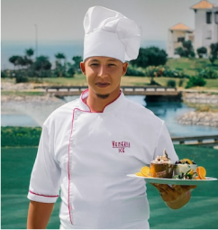
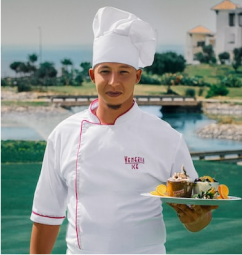

Cocina con los mejores.
Descubre un festín de recetas, consejos y clases en vivo para elevar tus habilidades culinarias. ¡Prepárate para saborear el arte de la cocina como nunca antes!
RegistratreDescubre un festín de recetas, consejos y clases en vivo para elevar tus habilidades culinarias. ¡Prepárate para saborear el arte de la cocina como nunca antes!
Registratre¡Despierta tu paladar con nuestras irresistibles recetas! Explora sabores exóticos y tradicionales que te llevarán a destinos culinarios único


Aprenderás directamente de los chefs más destacasdos mientras desmenuzan técnicas avanzadas y comparten su pasión por el arte de la cocina.


 

Podrás interactuar con una comunidad de amantes de la cocina, compartir tus creaciones, intercambiar ideas y recibir comentarios constructivos.

Únete a nosotros y descubre un mundo de sabores, técnicas y creatividad que te llevarán a convertirte en un verdadero maestro de la cocina.
Registratre